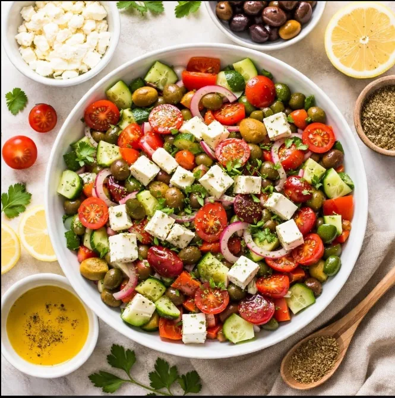

Healthy
Fresh Garden Salad
A refreshing salad with crisp vegetables for a light and delicious meal.
View Recipe →FRESH & DELICIOUS
Enjoy fresh ingredients and simple meal ideas that bring colour and flavour to your table.
Explore Recipes
SIMPLE & FRESH
Discover an easy recipe made with fresh, colourful ingredients.

Healthy
A refreshing salad with crisp vegetables for a light and delicious meal.
View Recipe →FIND YOUR INSPIRATION
Explore breakfast favourites, comforting meals, and homemade desserts.
We believe good food does not have to be complicated. Our collection celebrates simple ingredients, homemade flavours, and recipes worth sharing.